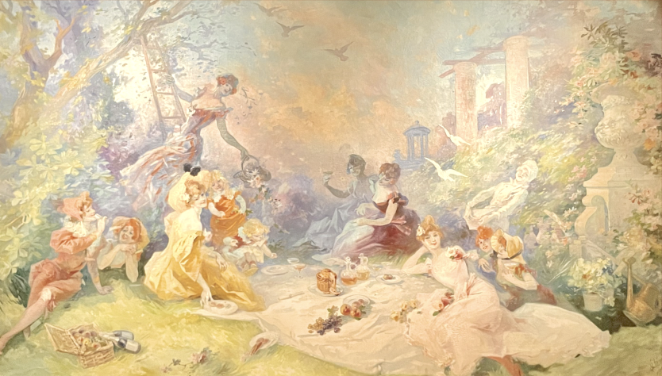

Le déjeuner sur l’herbe, 1904
Huile sur toile (208 x 265 cm)
Cette oeuvre colorée et légère met en scène un groupe de femmes qui pique-niquent dans un jardin. Ces jeunes femmes se ressemblent toutes : jolies rousses au décolleté plongeant, taille de guêpe, lèvres brillantes, elles semblent vouloir simplement profiter de la vie. La palette chromatique très colorée de l'artiste fait de ses œuvres un véritable feu d’artifice. On peut observer que chaque femme est représentée avec une posture différente, ce choix donne un aspect dynamique à la scène. Certaines tenues sont ornées de motifs floraux qui se marient parfaitement avec le décor. Cette oeuvre de l’artiste est un véritable hommage à la beauté féminine ainsi qu’à la nature, et cela ne manquera pas de ravir les amateurs d’art.
Jules CHERET